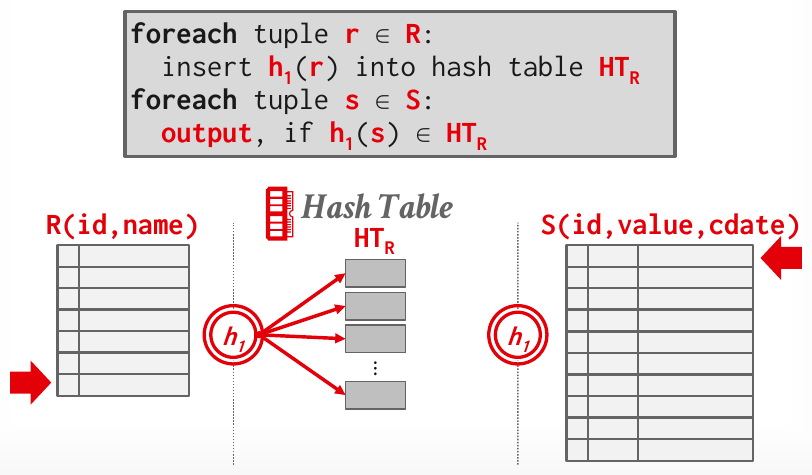
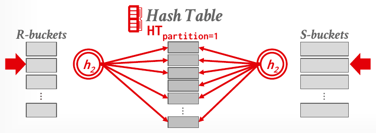

Database Internals in Go · Unit 6 · Lesson 7
P3.6 Hash Join and the NLJ→HashJoin Rule
Implement inner and left hash joins that build a hash table on the right child in Init and probe it with left tuples, on keys of several columns, with duplicates on both sides and NULL keys that never match; then write the optimizer rule that turns a nested loop join on ANDed column equalities into a hash join.
Unit 5, Lesson 4 showed why a hash join wins on equality predicates: each tuple of one input only has to look in one bucket of a table built from the other. Until now every join in your engine has been a nested loop join, and a query such as p3.14's join of a 10,000-row table runs one full scan of the inner side per outer tuple. This stage adds the executor and the rule that chooses it. The writeup asks for the Grace hash join; this lesson explains what CMU's tests and this course's tests actually check, and leaves partitioning to disk as an optional exercise.
Unit 5, Lesson 4: a Grace hash join of R (M pages) and S (N pages) needs no recursive partitioning. What does it cost in I/Os?
Unit 5, Lesson 7: BusTub's planner turns FROM t1, t2 WHERE t1.a = t2.b into which plan, before any rule runs?
Unit 6, Lesson 5: with the starter AggregateKey.Equal, which compares with CompareEquals, what happens to rows whose group key is NULL?
The hash join plan
The writeup's example, with this stage finished:
bustub> explain (o) select * from test_1 t1, test_2 t2 where t1.colA = t2.colA and t1.colB = t2.colC;
=== OPTIMIZER ===
HashJoin { type=Inner, left_key=["#0.0", "#0.1"], right_key=["#0.0", "#0.2"] }
SeqScan { table=test_1 }
SeqScan { table=test_2 }A HashJoinPlanNode has two children, a JoinType (inner or left; the factory refuses any other type before your code runs) and two lists of key expressions. LeftKeyExpressions are evaluated on a left tuple with the left child's schema, RightKeyExpressions on a right tuple with the right child's schema, and they pair up by position: here left column 0 must equal right column 0, and left column 1 must equal right column 2. Every key expression uses tuple index 0 (#0.2, not #1.2), because each one is evaluated on a single tuple with Evaluate, not on a pair with EvaluateJoin. A key need not be a bare column: TestHashJoinTwoKeys also joins on a + b = c. The output is the left columns followed by the right columns, as for the nested loop join.
Build on the right, probe with the left
The simple hash join of Lecture #12 has two phases. The build phase reads one input and puts every tuple into a hash table keyed on its join key. The probe phase reads the other input, hashes each tuple's key, and compares it with the tuples in that bucket. The writeup's hint repeats Lesson 5's: the build side is a pipeline breaker, so decide where the build happens. The starter's doc comments decide it for you: Init initializes the children and builds the hash table, and the struct comment says that left produces the probe tuples and right the build tuples.

Lecture #12 builds on the outer table, which here would be the left child. The course builds on the right child because of left joins. A left join must emit every left tuple, matched or padded. When left tuples are the probe side, each one arrives, finds all its matches in the finished table, and is emitted with them or padded on the spot, exactly as in the nested loop join. If the left side were the build side, the join would have to remember which build tuples ever matched and emit the unmatched ones after the whole probe side had passed. Either way, slide 46's rule still holds: only the build side has to fit in memory, and the probe side is streamed.
Keys of several columns
The writeup's hint: "You will need a way to hash a tuple with multiple attributes in order to construct a unique key. As a starting point, take a look at how the SimpleAggregationHashTable in the AggregationExecutor implements this functionality." AggregateKey.Hash folds each value's Hash() into one uint64 with types.CombineHashes, and so can your join key. Hashing alone isn't enough, because different keys can share a hash: the writeup says the implementation should handle hash collisions on either side of the join. So the table maps a hash to the build tuples that have it, and a probe compares the actual key values of each candidate before it counts as a match. A Go map[uint64][]int from hash to positions in a slice of build tuples, with each tuple's evaluated key stored next to it, is enough.
Duplicates on both sides
Nothing makes join keys unique. A right key can appear several times, so a bucket holds a list; a left key can appear several times, so the same bucket is probed again and again. Every left tuple produces one output tuple per matching build tuple, and TestHashJoinDuplicateKeys joins 30 left rows with three distinct keys against 25 right rows with five, expecting 150 rows: each of the three shared keys pairs 10 left rows with 5 right rows. One left tuple's matches can outlast a batch, so keep the current left tuple, its list of matches and a position in that list between calls, the same resumable shape as the nested index join of the last lesson.
NULL keys never match
A join predicate l.a = r.b is NULL when either side is NULL, and NULL is not true, so a NULL key matches nothing. This is the opposite of Lesson 5's GROUP BY, where two NULL keys had to be equal: compare join keys with CompareEquals(...) == types.CmpTrue, never with CompareExactlyEquals. The cleanest rule is to treat a key with any NULL part as "no key": don't insert such a build tuple at all, and let such a probe tuple find no matches. In a left join that probe tuple is still emitted, padded:
left: (NULL, 1), (1, 2) right: (NULL, 'n'), (1, 'one')
inner: 1, 2, 1, one
left: integer_null, 1, integer_null, varlen_null
1, 2, 1, oneAn empty build side is the extreme case: an inner join returns nothing, a left join returns every left tuple padded. And Init rebuilds the table from scratch on every call; TestHashJoinReInit runs a left join three times and checks that each child was initialized exactly three times.
#12 Join Algorithms, "Basic hash join" (48:26), slides 33–36: why partitioning by hash works for equality, build and probe, and probe filters.
Grace hash join: taught, not tested
The writeup goes further than the simple hash join: "It is possible that the probe hash table may NOT fit entirely in memory (assuming our memory can support hash table of up to 4KB tuples). So your implementation should follow the Grace Hash Table algorithm discussed in lecture." It also asks you to design the IntermediateResultPage that holds the partitions, and suggests reading the external merge sort task first so that one page format can serve both.
No test checks how the join stores its build side. CMU's p3.14 and p3.15 compare rows and the plan's shape, and so do this course's unit tests; the doc comment on HashJoinExecutor says so: "the tests check only the results". TestHashJoinLargeBuildSideSmallPool joins 20,000 by 20,000 rows through a 16-frame buffer pool, but the frames hold the scanned table pages, and an in-memory hash table on the Go heap passes it. This course's reference solution is in-memory. So the graded stage is the in-memory hash join described above. Grace partitioning is still part of the design the writeup asks for, and the next section turns it into an exercise.

Optional exercise: a hash join that spills
Do this after Lesson 8, once your IntermediateResultPage can store and read back VARCHAR tuples. It changes only your Init and Next; the stage-9 checkpoint must still pass.
- Partition. Pick k partitions. Read the right child and append each tuple with a non-NULL key to partition
h1(key) % k, a chain of intermediate pages fromNewPage; drop each page's write guard when it is full. Do the same for the left child, except that a left tuple with a NULL key can be emitted padded right away (left join) or dropped (inner join). - Probe. For each partition i, build an in-memory table from right partition i, keyed with a second hash
h2(Unit 5's reason: within one partition, every key already agrees onh1). Then stream left partition i through it, with the same matching, duplicate and padding rules as before. Every left tuple's matches are in the same-numbered right partition, so a left tuple with no match in it has none at all and can be padded there. - Clean up. Delete each partition's pages with
DeletePageonce it has been joined, and the rest on re-Init, as the sort does with its runs.
A partition whose right side still doesn't fit can be partitioned again with another hash function, Lecture #12's recursive partitioning; one with a single key too common to fit can fall back to a block nested loop join for that key. To see the spill, wrap the buffer pool's page writes in a test of your own the way TestSortLargeVarcharSmallPool counts them, or run TestHashJoinLargeBuildSideSmallPool with a small k and print how many pages each partition uses.
#12 Join Algorithms, "Partitioned hash join" (1:03:53), slides 37–48: the Grace hash join, recursive partitioning, its cost and the hybrid hash join.
The NLJ→HashJoin rule
The writeup: "the hash join algorithm can be used when a join predicate is a conjunction of several equi-conditions between two columns. For this project, you should be able to handle a varying number of equi-conditions connected by AND." You write Optimizer.OptimizeNLJAsHashJoin in optimizer/nlj_as_hash_join.go. Its starter version returns its input, which is why every join so far stayed a nested loop join.
Where the rule runs
Unit 5, Lesson 7 explained why the order of rules matters. OptimizeCustom, the default list, runs OptimizeMergeProjection, then OptimizeMergeFilterNLJ, then your rule. By the time your rule sees a comma join, its WHERE clause has already been merged into the join's predicate. On the starter, with your rule still a stub, the writeup's two forms of the same join look like this:
bustub> explain (o) select * from test_1 t1, test_2 t2 where t1.colA = t2.colA and t1.colB = t2.colC;
=== OPTIMIZER ===
NestedLoopJoin { type=Inner, predicate=((#0.0=#1.0)and(#0.1=#1.2)) }
SeqScan { table=test_1 }
SeqScan { table=test_2 }
bustub> explain (o) select * from test_1 t1 left outer join test_2 t2 on t2.colA = t1.colA and t2.colC = t1.colB;
=== OPTIMIZER ===
NestedLoopJoin { type=Left, predicate=((#1.0=#0.0)and(#1.2=#0.1)) }
SeqScan { table=test_1 }
SeqScan { table=test_2 }Both must become a HashJoin with left_key=["#0.0", "#0.1"] and right_key=["#0.0", "#0.2"], the second one of type Left.
Extracting the keys
The writeup's last hint: "When dealing with multiple equi-conditions, try to extract out the keys recursively, instead of matching the joining condition with multiple layers of if clauses." The predicate is a tree. A recursive function that takes an expression and appends to the two key lists, returning false as soon as some part doesn't fit, handles any number of conditions and any nesting of ANDs (TestHashJoinRuleThreeEqualities tries both (x AND y) AND z and x AND (y AND z)):
- A
*expressions.LogicExpressionwhoseLogicTypeisexpressions.And: both children (ChildAt(0)andChildAt(1)) must succeed. AnOrfails. - A
*expressions.ComparisonExpressionwhoseCompTypeisexpressions.Equal, and whose two children are both*expressions.ColumnValueExpressionfrom different sides: one key pair. Anything else fails. - Any other expression (a constant such as TRUE, arithmetic, another comparison type) fails.
The side comes from TupleIdx(): 0 is the left child, 1 the right child. The writeup warns that "it is possible that the column from outer table is on the right side of the equi-condition", as in the left outer join above, where every equality reads #1.x=#0.y; swap the two columns so that the tuple-0 column goes into the left keys. Two columns with the same tuple index, such as left.a = left.b, compare columns of one input and can't be a join key, so the whole predicate fails. Each key goes into its list rewritten to tuple index 0, with expressions.NewColumnValueExpression(0, c.ColIdx(), c.ReturnType()), which is what produces right_key=["#0.0", "#0.2"].
If extraction fails anywhere, return the nested loop join unchanged: the rule must never drop part of a predicate. The rule tests check each case that stays: a < x, a != x, a = 1, a cross join on TRUE, left.a = left.b, a = x AND b > y, a = x AND b = 3 and a = x OR b = y. Only inner and left joins are rewritten. When extraction succeeds, build the node with plans.NewHashJoinPlanNode(nlj.OutputSchema(), nlj.LeftPlan(), nlj.RightPlan(), leftKeys, rightKeys, nlj.JoinType): same children in the same order, same output schema, same join type.
Bottom-up, for nested joins
Like most of BusTub's rules, this one rebuilds the tree bottom-up: first apply the rule to the node's children, then look at the node. The pre-built helper does the first step: optimizeChildren(plan, o.OptimizeNLJAsHashJoin) returns the node rebuilt over its rewritten children. A join of three tables then becomes a hash join over a hash join:
bustub> explain (o) select * from (__mock_table_1 a inner join __mock_table_3 b on a.colA = b.colE) inner join __mock_table_1 c on b.colE = c.colB;
=== OPTIMIZER ===
HashJoin { type=Inner, left_key=["#0.2"], right_key=["#0.1"] }
HashJoin { type=Inner, left_key=["#0.0"], right_key=["#0.0"] }
MockScan { table=__mock_table_1 }
MockScan { table=__mock_table_3 }
MockScan { table=__mock_table_1 }The outer join's left input is the inner join's output, a's two columns followed by b's, so b.colE is its column 2. A join under a Limit or a Projection must be found too; TestHashJoinRuleNestedJoins checks both.
What the .slt files check
p3.14 and p3.15 run under the default rules and mark their queries with plan checks on the explain (o) text. +ensure:hash_join fails with HashJoin not found unless the text contains exactly one HashJoin; +ensure:hash_join*2 and *3 want two and three. BusTub's predicate has a quirk that the Go runner keeps: these three also pass whenever the plan contains Filter anywhere. +ensure:hash_join_no_filter has no such escape: it wants one HashJoin and no Filter in the optimized plan, so every equality must have become a key. With the rule still a stub, the SQL test fails at the first plan check:
--- FAIL: TestHashJoinSQL/p3.14-hash-join (0.04s)
stages_test.go:33: p3.14-hash-join.slt:19: HashJoin not found; failed to process extra options
--- SQL
select * from test_simple_seq_1 s1 inner join test_simple_seq_2 s2 on s1.col1 = s2.col1;The rule walks an expression tree whose nodes are different Go types behind one interface, expressions.Expression. A type switch, switch e := expr.(type) { case *expressions.LogicExpression: … case *expressions.ComparisonExpression: … default: … }, does the work of the dynamic_casts in BusTub's rules: each case gets e already converted to that type, and the default branch is the "anything else fails" rule. A two-value type assertion, c, ok := e.ChildAt(0).(*expressions.ColumnValueExpression), checks one child without panicking when it is something else.
Check your understanding
An inner hash join on l.k = r.k. The left keys are 2, 2, 2 and 5; the right keys are 2, 2 and 7. How many rows does it return?
The left child holds (NULL, 1) and (1, 2); the right child holds (NULL, 'n') and (1, 'one'). What does a left hash join on the first columns return?
Your rule receives NestedLoopJoin { type=Left, predicate=((#1.0=#0.0)and(#1.2=#0.1)) }. Which keys must the hash join get?
Which of these nested loop join predicates does the rule turn into a hash join?
Why does this course's hash join build its table on the right child rather than on the left?
Build it: the hash join executor and its rule (stage 9)
You edit execution/hash_join_executor.go (Init, Next and the fields of HashJoinExecutor) and optimizer/nlj_as_hash_join.go (OptimizeNLJAsHashJoin and any helpers). Run commands from go_db_internals/intro_to_db. The rules, in plain words:
Nextfollows the batch contract: clear*tuplesand*ridsfirst, append up tobatchSizetuples with one RID each (the zerocommon.RID{}), return true for every non-empty batch including the last partial one, and false once the join is exhausted, on every later call too. Return errors from the children instead of panicking.Initinitializes both children and builds the table from the right child, from scratch on every call.- Two tuples match only when every key pair compares
CmpTrue; a key with a NULL part matches nothing. Duplicates on either side produce every pair. - Output tuples are the left columns followed by the right columns. A left join emits an unmatched left tuple once, padded with NULLs of the right columns' types.
- The rule converts an inner or left nested loop join whose predicate is an AND tree of equalities between a left column and a right column, applying itself to the children first; anything else stays.
-
What to think about
What does the table map from and to, given that different keys can share a hash and one key can have many tuples? Which schema do you pass to
Evaluatefor a right key? What must the table and the probe-side state look like after a secondInit?The approach
Write a helper that evaluates a list of key expressions on one tuple and returns the values, their combined hash (start at 0 and fold each value's
Hash()in withtypes.CombineHashes) and whether the key is usable (no NULL part). InInit, initialize both children, reset a slice of build tuples, a parallel slice of their keys and amap[uint64][]intfrom hash to positions, then draine.rightwithNextin batches ofcommon.BatchSizeand add every tuple with a usable key. Reset the probe-side state last.One key fragment
v := expr.Evaluate(t, schema) if v.IsNull() { return nil, 0, false // a NULL key matches nothing } hash = types.CombineHashes(hash, v.Hash()) -
What to think about
A bucket can hold tuples whose keys differ from the probe key: what decides a match? Which state lets the next call continue in the middle of one left tuple's matches? This loop is very close to one you wrote in the last lesson; which one?
The approach
Reuse the nested index join's shape: the left batch with a position and an exhausted flag, the current left tuple, its matches (positions in the build slice) and a position in them. For a new left tuple, evaluate the left keys with the same helper; if the key is usable, look up its hash in the map and keep the candidates whose stored key equals it, value by value, with
CompareEqualsreturningtypes.CmpTrue. No matches: pad it for a left join, skip it for an inner join. Otherwise emit one combined tuple per match, advancing the position and stopping when the batch is full.One key fragment
for k, v := range e.buildKeys[i] { if v.CompareEquals(key[k]) != types.CmpTrue { equal = falseCheckpoint: the executorRun
go test -race -run '^TestHashJoin' ./execution/. It runs only the eight executor tests, since the rule's tests are in another package:OneKey,TwoKeys(with the expression key),LeftJoinPadding,DuplicateKeys,NullKeysNeverMatch,EmptyBuildSide,LargeBuildSideSmallPoolandReInit. Success printsok intro_to_db/execution; on the starter they fail withpanic: TODO(P3): HashJoinExecutor.Init not implemented. -
What to think about
Which expression types can appear in a predicate that converts, and which tells you to give up? How do you know which side a column belongs to, and what do you do when the right side's column is written first? Why must one failing conjunct make the whole predicate fail?
The approach
Take the expression and pointers to the two key slices; return a bool. Type-switch on the expression. For a
*expressions.LogicExpression, requireLogicType == expressions.Andand recurse into both children, succeeding only if both do. For a*expressions.ComparisonExpression, requireCompType == expressions.Equaland two*expressions.ColumnValueExpressionchildren with differentTupleIdx(); if the first has tuple index 1, swap them; append each as a new column expression with tuple index 0. Every other case returns false.One key fragment
if a.TupleIdx() == 1 { a, b = b, a // the left input's column goes into the left keys } *leftKeys = append(*leftKeys, expressions.NewColumnValueExpression(0, a.ColIdx(), a.ReturnType())) -
What to think about
What must the rule return for a node that is not a nested loop join, or one whose predicate doesn't convert? Which parts of the old node does the hash join keep unchanged? What does "bottom-up" mean for a join whose left child is another join?
The approach
Start with
optimized := optimizeChildren(plan, o.OptimizeNLJAsHashJoin). Ifoptimizedis not a*plans.NestedLoopJoinPlanNode, or its predicate isnil, or its join type is neither inner nor left, return it. Call the helper with fresh key slices; if it fails, returnoptimized. Otherwise returnplans.NewHashJoinPlanNodewith the join's output schema,LeftPlan(),RightPlan(), the two key lists and the join type.One key fragment
optimized := optimizeChildren(plan, o.OptimizeNLJAsHashJoin) nlj, ok := optimized.(*plans.NestedLoopJoinPlanNode) if !ok || nlj.Predicate == nil { return optimized }Checkpoint: the ruleRun
go test -race -run '^TestHashJoinRule' ./optimizer/. It runs the ten rule tests on mock tables (no buffer pool needed):OneEquality,FlippedEquality,ThreeEqualities,NonEqualityStaysNLJ,SameSideEqualityStaysNLJ,EqualityAndNonEqualityStaysNLJ,OrStaysNLJ,LeftJoin,NestedJoinsandWithCustomRules, which goes throughOptimizefrom a filter over a cross join. The "stays" tests first check that one equality converts and stop with "the rule does not turn a join ON left.a = right.x into a HashJoin yet" until it does. A rule that leaves a join alone prints the plan it returned:--- FAIL: TestHashJoinRuleOneEquality (0.00s) hash_join_rule_test.go:58: ON left.a = right.y: the rule returned NestedLoopJoin { type=Inner, predicate=(#0.0=#1.1) } MockScan { table=left } MockScan { table=right } want a HashJoin
From go_db_internals/intro_to_db, run:
go test -race -run '^TestHashJoin' -timeout 300s ./...It runs the eight executor tests in execution, the ten TestHashJoinRule tests in optimizer, and TestHashJoinSQL in sqllogictest, whose subtests run p3.14-hash-join.slt (one-key and two-key joins with duplicates, left joins, a 10,000-row join, ensure:hash_join and ensure:hash_join_no_filter) and p3.15-multi-way-hash-join.slt (joins of three and four inputs with ensure:hash_join*2 and *3). Success prints three ok lines, with every other package at ok and [no tests to run] (or [no test files]):
ok intro_to_db/execution 1.845s
ok intro_to_db/optimizer 1.014s
ok intro_to_db/sqllogictest 1.411sOn the starter the executor tests fail at the stub, the rule tests as shown above, and the SQL test at its first plan check (p3.14-hash-join.slt:19: HashJoin not found, and p3.15-multi-way-hash-join.slt:9: HashJoin should appear exactly twice). One file, with every record logged:
go test -race -run '^TestHashJoinSQL$/p3.15' ./sqllogictest/
go test -race -run '^TestHashJoinSQL$/p3.15' -v ./sqllogictest/ -args -slt.verbosea = x AND b > y must stay a nested loop join. Ask your teacher (me) before moving on.
Primary sources: the CMU 15-445/645 Fall 2025 Project #3 writeup (Task #3, HashJoin and Optimizing NestedLoopJoin to HashJoin, and their hints); BusTub src/include/execution/executors/hash_join_executor.h, src/execution/hash_join_executor.cpp, src/include/execution/plans/hash_join_plan.h, src/include/storage/page/intermediate_result_page.h, src/optimizer/nlj_as_hash_join.cpp and src/optimizer/optimizer_custom_rules.cpp at commit d49b823, and its test/sql/p3.14-hash-join.slt and p3.15-multi-way-hash-join.slt; Lecture #12 slides 33–48; this course's execution/hash_join_executor.go, optimizer/nlj_as_hash_join.go, optimizer/optimizer_custom_rules.go, sqllogictest/runner.go (checkEnsure) and their tests.